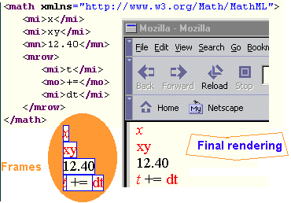
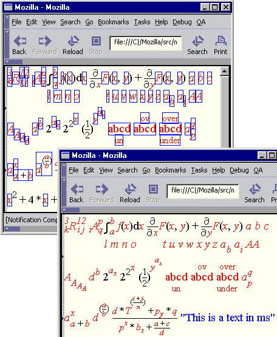
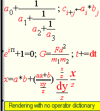

Implementation of MathML in Mozilla:
Progress Report
Roger B. Sidje
<rbs@maths.uq.edu.au>
Sat Sep 18 1999
- Background
- Implementation Details
- TODO...
Background
MathML consists of two parts:
- Presentation Markup: primarily concerned with the notational structure of formulas;
- Content Markup: primarily concerned with the mathematical structure (or meaning). Content Markup ensures a non-ambiguous interpretation aimed at computer algebra systems. For illustration, one can use the expression tree is in the DOM in conjunction with JavaScript to dynamically evaluate (and eventually plot) user-defined functions.
Presentation Markup and Content Markup can be mixed together. Futhermore, the MathML REC enables the user to provide a sort of alt="presentation-markup" within Content Markup to guide the rendering. Conversely, Presentation Markup can also have a sort of alt="content-markup" to be used to evaluate the expression. The exact syntax is as follows:
|
<semantics> <!-- Presentation markup here --> ... <annotation-xml encoding="MathML-Content"> <!-- Content markup here --> ... </annotation-xml> </semantics> |
<semantics> <!-- Content markup here --> ... <annotation-xml encoding="MathML-Presentation"> <!-- Presentation markup here --> ... </annotation-xml> </semantics> |
More generally, the <semantics> environment can be used to include arbitrary notations, of which TeX/LaTeX is an illustrative case in point.
As far as rendering is concerned, both Content Markup and Presentation Markup can be rendered in a built-in manner, but Presentation Markup is more general, and it is possible to internally use a XSL-T processor to translate Content Markup into Presentation Markup. This way of doing so is allowed by the MathML REC.
Efforts of the MathML project have been devoted so far to Presentation Markup which consists of 28 tags that are subdivided into groups as follows:
Token Elements

| <mi> -- identifier |
| <mn> -- number |
| <mo> -- operator, fence, or separator |
| <mtext> -- text |
| <mspace/> -- space |
| <ms> -- string literal |
General Layout Schemata
| <mrow> -- horizontally group any number of subexpressions |
| <mfrac> -- form a fraction from two subexpressions |
| <msqrt> and <mroot> -- form a radical |
| <mstyle> -- style change |
| <merror> -- enclose a syntax error message from a preprocessor |
| <mpadded> -- adjust space around content |
| <mphantom> -- make content invisible but preserve its size |
| <mfenced> -- surround content with a pair of fences |
Script and Limit Schemata
| <msub> --attach a subscript to a base |
| <msup> --attach a superscript to a base |
| <msubsup> --attach a subscript-superscript pair to a base |
| <munder> --attach an underscript to a base |
| <mover> --attach an overscript to a base |
| <munderover> --attach an underscript-overscript pair to a base |
| <mmultiscripts> --attach prescripts and tensor indices to a base |
Tables and Matrices
| <mtable> -- table or matrix |
| <mtr> -- row in a table or matrix |
| <mtd> -- one entry in a table or matrix |
| <maligngroup/> and <malignmark/> -- alignment markers |
Enlivening Expressions
| <maction> -- bind actions to a subexpression (e.g., links) |
Attributes
The following stylistic attributes can be attached to all tags
(except <mspace/>):
fontsize,
fontweight,
fontstyle,
fontfamily,
color.
A few other tags have their own specific attributes as illustrated below:
-
<mfrac
linethickness=""
> -
<mo
form="." fence="." separator="." lspace="." rspace="." stretchy="." symmetric="." maxsize="." minsize="." largeop="." movablelimits="." accent="."
> -
<mpadded
width="." lspace="." height="." depth="."
> -
<mstyle
scriptlevel="." displaystyle="." scriptsizemultiplier="." scriptminsize="." color="." background="."
>
Implementation Details
 Although from a distance it may seem that CSS rules can be used to implement MathML, CSS rules are not satisfactory. Whilst some tags can be mapped to CSS, attempts to solely rely on current CSS rules to render MathML have failed so far. Java applets, inline images, and plug-ins have been the preferred alternatives, but they suffer from awkward limitations which have been rehearsed here and elsewhere. Even from within Mozilla, the MathML effort is faced with some difficulties such as the lack of a precise cross-platform math-aware font metrics system.
The enclosed figure shows the bounding boxes of frames. It is immediate that the frames do not exactly enclose symbols. Just getting the famous xheight (the height of the symbol x) for all fonts requires an approximation or interpolation -- which is imprecise. In general therefore, the alignment of scripting elements can only be approximative. Attaining a similar level of quality as TeX will necessitate an array of changes in the font-metrics system, and can only be effective on a restricted set of fonts. Fiddling with the font metrics system is improbable at this stage. If possible in the long-run, the MathML project may liaise with other module owners to add infrastructure that could eventually allow us to overcome some of these limitations and improve the rendering.
As the MathML W3C Recommendation puts it, "HTML in general describes logical structures such as headings, paragraphs, etc. but only suggests (i.e. does not require) specific ways of rendering various logical parts of the document, in order to allow for medium-dependent rendering and for individual preferences of style; MathML presentation elements are fully compatible with this philosophy. This [MathML W3C] specification describes suggested visual rendering rules in some detail, but a particular MathML renderer is free to use its own rules as long as its renderings are intelligible."
Overview of the implementation
Apart from a couple of hooks in nsCSSFrameConstructor and nsXMLDocument, all of the MathML rendering code is located in the mathml directory.At the heart of the MathML engine is the base class nsMathMLContainerFrame.
class nsMathMLContainerFrame :
public nsHTMLContainerFrame,
public nsIMathMLFrame {
public:
// nsIMathMLFrame methods
NS_IMETHOD QueryInterface(REFNSIID aIID,
void** aInstancePtr);
NS_IMETHOD_(nsrefcnt) AddRef(void);
NS_IMETHOD_(nsrefcnt) Release(void);
NS_IMETHOD
Stretch(nsIPresContext& aPresContext,
nsStretchDirection aStretchDirection,
nsCharMetrics& aContainerSize,
nsCharMetrics& aDesiredStretchSize);
NS_IMETHOD
GetPresentationData(PRInt32* aScriptLevel,
PRBool* aDisplayStyle);
NS_IMETHOD
UpdatePresentationData(PRInt32 aScriptLevelIncrement,
PRBool aDisplayStyle);
NS_IMETHOD
UpdatePresentationDataFromChildAt(PRInt32 aIndex,
PRInt32 aScriptLevelIncrement,
PRBool aDisplayStyle);
// nsHTMLContainerFrame methods
NS_IMETHOD
Init(nsIPresContext& aPresContext,
nsIContent* aContent,
nsIFrame* aParent,
nsIStyleContext* aContext,
nsIFrame* aPrevInFlow);
NS_IMETHOD
Reflow(nsIPresContext& aPresContext,
nsHTMLReflowMetrics& aDesiredSize,
const nsHTMLReflowState& aReflowState,
nsReflowStatus& aStatus);
NS_IMETHOD
ReResolveStyleContext(nsIPresContext* aPresContext,
nsIStyleContext* aParentContext,
PRInt32 aParentChange,
nsStyleChangeList* aChangeList,
PRInt32* aLocalChange);
// helper methods for processing empty frames
static PRBool
IsOnlyWhitespace(nsIFrame* aFrame);
static void
ReflowEmptyChild(nsIFrame* aFrame);
protected:
PRInt32 mScriptLevel;
PRBool mDisplayStyle;
virtual PRIntn GetSkipSides() const { return 0; }
};
|
| Note: the implementation above is subject to changes as need arises. |
The nsMathMLContainerFrame is itself derived from two other classes:
- nsHTMLContainerFrame and
- nsIMathMLFrame.
By using nsHTMLContainerFrame as its cornerstone, the MathML engine inherits from a solid foundation, and furthermore the resulting implementation of the MathML engine is extremely compact. As a direct result of the efficient re-use of the building blocks of the Mozilla framework, the overhead of the MathML engine on the footprint of the overall application is proving negligible.
The other nsIMathMLFrame class caters for tasks that are specific to MathML. For example, it provides an interface for handling the scriptlevel of scripting elements. The scriptlevel is somewhat related to how nested a frame is. For example the superscript element has a higher scriptlevel and should typically be rendered in a smaller font. When the scriptlevel changes, the MathML engine uses ReResolveStyleContext() to pass appropriate pseudo-styles to the Style System in order to alter the style context of the frames. The nsIMathMLFrame class also provides an interface through which stretchy elements are handled by the <mo> frame with the support of the nsMathMLChar class [WIP].
Somewhat oversimplified, it may be said that because MathML is an application of XML, Expat does the job of parsing, NGLayout builds a content model (a raw form of the DOM), the lizard walks over the content tree, asking each tag to build its frame, the MathML engine intercepts math tags, adds some math-specific formatting and style, and the NGlayout machinery does the rest. Understanding the precise details of the full logic of the Gecko system is an enormous task beyond the scope of this cursory description. In addition to the technical documentation at the main mozilla.org site, the reader can refer to http://lxr.mozilla.org/mozilla/source/layout/doc/ which provides supplementary comments on how the lump of frames are gathered and laid out with the support of other classes such as nsInlineFrame and nsBlockFrame.
The particularity of MathML is that it is context- and content-dependent. As an example, given the markup <mi>content</mi>, what is expected is that the 'content' should appear in italics only if it is a single character. Another example is the rendering of <mo>content</mo> which varies depending on what the 'content' is.  Rules describing this behavior are provided in the Operator Dictionary which is a repertoire of about 500 operators. Given the markup <mo>symbol</mo>, the dictionary tells whether the 'symbol' is a default operator and how it should be rendered, i.e., how much space should be added around the symbol depending on its position (prefix, or infix, or postfix), whether the symbol should be stretched because it is an accent, how large it ought to be, and so on. Contrast the figure on the right in which the operator dictionary is disabled with the corresponding previous figure in which the operator dictionary was enabled.
By using an AVL tree built in Mozilla, an indexed table encoding dictionary information has been implemented in a neat and compact manner (see nsMathMLOperators). The dictionary is indexed on the operator and its form attribute. Other issues such as that pertaining to the precise spacing between particular adjacent tags can also be encoded in a neat manner during frame construction [TBI].
Layout with style
Leaving aside a few exceptions, MathML Presentation tags are of the form:
<tag>child0 child1 ... childn</tag>
<tag>base arguments</tag>
<tag>base</tag>
The nsMathMLContainerFrame acts like an inferred mrow. By default, this frame uses its Reflow() method to lay its children horizontally and ensure that their baselines are aligned.
This frame is a math-aware frame in the sense that given the markup <tag>base arguments</tag>, the ReResolveStyleContext() method mentioned earlier can be used to render the 'base' in normal-font, and the 'arguments' in small-font. This is a common functionality to tags like msub, msup, msubsup, mover, munder, munderover, mmultiscripts. They use SetInitialChildList() to trigger ReResolveStyleContext() for the very first time as soon as all their children are known. However, each of these tags has its own Reflow() method to lay its children as appropriate, thus overriding the default Reflow() method in the nsMathMLContainerFrame base class.
In reality, ReResolveStyleContext() uses the scriptlevel to decide how to switch the font. Hence, tags like mfrac are also derived with no extra code for scriptstyle manipulation.
Other tags like mi that do not have 'arguments' can be derived from the base class as well. The class caters for empty arguments. Notice that mi implements its own ReResolveStyleContext() method to switch to a normal-font (rather than italics) if its text content is not a single character.
In general therefore, to derive other tags from this base class, ReResolveStyleContext() can be coded to produce the desired stylistic effects. For example, mrow avoids using the default ReResolveStyleContext(), and instead uses the version in the base class nsHTMLContainerFrame. Apart from mi, the default ReResolveStyleContext() is re-used in all subclasses that need scriptstyle switching.
ReResolveStyleContext() implements nsIFrame::ReResolveStyleContext(). See the documentation in nsIFrame.h for additional information.
TODO...
- Fine-tuning and improvement of the visual appearance. This is an artistic job involving a lot of compilations...
- Implementation of remaining tags such as msqrt, mroot, mfenced, mtable.
- Support for all attributes on tags, expecially mstyle.
- Support for stretchy symbols. If we are given the
following markup:
<mrow> <mo>(</mo> <mfrac> <mi>a</mi> <mi>b</mi> </mfrac> <mo>)</mo> </mrow>the parenthesis should stretch to enclose the mfrac. With the Stretch() method, the MathML engine knows how to ask stretchy nsMathMLChar objects to stretch themselves. Although using a bigger font-size might be a ugly hack, the recommended solution is to teach each of the stretchy objects how to assemble a set of partial glyphs that will make them bigger. - And much more...